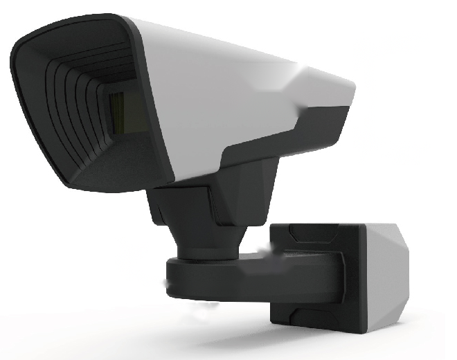

內建 AI 運算
Quad ARM Cortex-A55 + DSP，3.6 eTOPS@int8 / 7.2 eTOPS@int4，Linux 與 RTOS 雙系統。
辨識在攝影機裡完成。Quad ARM Cortex-A55 搭配內建 DSP 加速 AI 後處理，12 奈米製程 SoC，4K@60fps 影像與 SONY STARVIS 2 感光元件，交通事件偵測準確率達 99%。

傳統做法把所有畫面回傳中心再分析，頻寬與伺服器成本都高。HJ-873AI 在攝影機內完成偵測與辨識，只上傳事件、統計與必要片段。
Quad ARM Cortex-A55 + DSP，3.6 eTOPS@int8 / 7.2 eTOPS@int4，Linux 與 RTOS 雙系統。
SONY STARVIS 2 感光元件，彩色 0.001 lux、黑白 0.0005 lux，120 dB WDR，AI 降噪與 AI-WDR。
F1.3 大光圈、自動對焦、DC-Iris、紅外線焦距校正，遠端調整焦距與預設點。
事件、物件、時間資料交換，MQTT、RTSP、SNMP、802.1X，可接入既有交控與影像平台。
PoE 供電、10/100 Mbps、4G/5G 選配，鋁製 IP65 外殼，水平 180°、垂直 +20° 至 −70°。
內建 16GB eMMC，最高擴充 1TB，事件搜尋、本機錄影、回放與 syslog 紀錄。
越線、警戒線、區域、多邊形皆可視覺化設定觸發條件，事件即時通報並留存回放。
模型可依場域切換，交通路口、施工工地、公共空間都用同一套硬體與管理介面。
路口與路段車流統計、事件偵測、車牌辨識與車速量測，串接交控中心。
安全帽帽扣偵測、火災與煙霧偵測、危險區域闖入，事件即時通報工地主任。
行人偵測、人流密度、警戒線越界，適用校園、園區與公共空間。
規格如有變更，以出貨版本為準。需要規格書 PDF 或送審資料，請與我們聯絡。
提供場域資訊，我們安排樣機測試與整合評估。